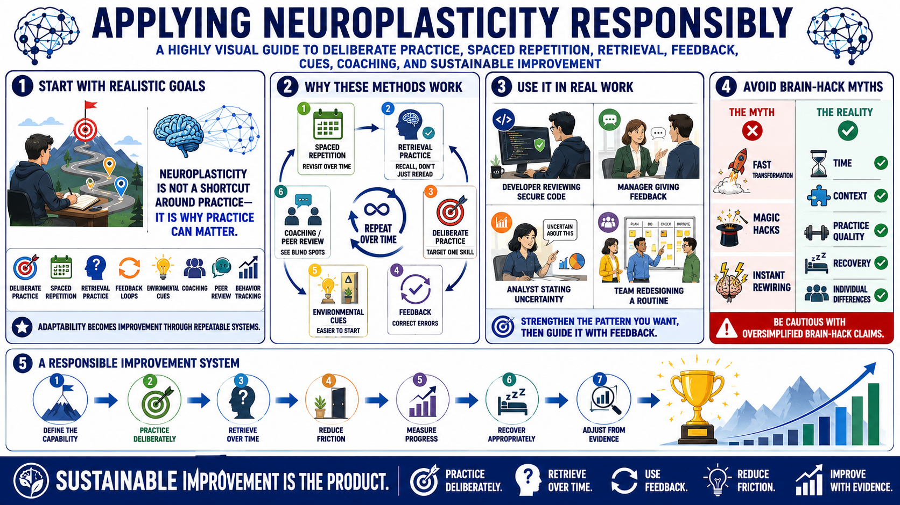

Applying Neuroplasticity Responsibly
Connecting to LMS... Progress: in progress

Narration
Responsible application starts with realistic goals. Neuroplasticity is not a shortcut around practice. It is a reason practice can matter. Deliberate practice, spaced repetition, retrieval practice, feedback loops, environmental cues, coaching, peer review, and behavior tracking all turn the general idea of adaptability into concrete systems for improvement.
Spaced repetition and retrieval practice are useful because they ask learners to revisit and recall information over time. Deliberate practice is useful because it targets a specific capability and uses feedback to correct errors. Environmental cues are useful because they make desired behaviors easier to start. Coaching and peer review are useful because they help learners see gaps they may not notice alone.
These ideas apply across technical skills, communication, leadership, and personal development. A developer can practice secure code review patterns. A manager can rehearse clearer feedback conversations. An analyst can improve how they state uncertainty. A team can redesign routines so the desired behavior is easier to repeat. In each case, the important question is what pattern should be strengthened and how feedback will guide improvement.
Be cautious with brain hack claims. Oversimplified advice often promises fast transformation while ignoring time, context, practice quality, recovery, and individual differences. A responsible approach is less glamorous but more useful: define the capability, practice it deliberately, retrieve it over time, reduce friction, measure progress, recover appropriately, and adjust based on evidence. Sustainable improvement is the product.